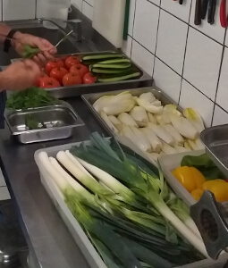
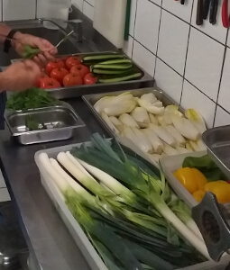

Ô Phil des Saveurs
Le 100% fait maison
La viande de Philippe utilisée pour ses plats préparés est 100% française. Ses légumes de saison, frais et finement coupés, donnent des saveurs authentiques à tous ses plats. Ses pates lasagne faites maison

La viande de Philippe utilisée pour ses plats préparés est 100% française. Ses légumes de saison, frais et finement coupés, donnent des saveurs authentiques à tous ses plats. Ses pates lasagne faites maison
